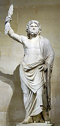
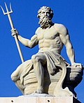
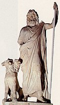

En la mitología griega, los dioses eran considerados seres insaciables y
se
representaban con símbolos para distinguir y venerar su dominio o habilidad (el amor, la caza, la
lluvia, la fecundidad…). Se creía que no pasaban hambre y que podía llegar a manifestarse en
cualquier momento y en cualquier parte del mundo.
Zeus
Dios supremo del Olimpo

Rey de los dioses y gobernante del monte Olimpo; dios del cielo y el trueno. Hijo menor de los
titanes Crono y Rea. Los símbolos incluyen el rayo, el águila, el roble, el cetro y la
balanza. Hermano y marido de Hera, aunque tuvo muchas amantes, tanto diosas como mortales.
Poseidon
Dios de los mares

Señor de los mares, los terremotos y los caballos. Los símbolos incluyen el caballo, el toro, el delfín y
el tridente . Medio hijo de Crono y Rea. Hermano de Zeus y Hades. Casado con la nereida
Anfítrite, aunque, como la mayor parte de dioses masculinos griegos, tuvo muchas amantes.
Hades
Dios del inframundo

Dios del inframundo, de los muertos y las riquezas de la tierra («Pluto» se traduce como «el rico»),
nació en la primera generación olímpica, pero debido a que vive en el inframundo en vez de en
el monte Olimpo, suele no ser incluido entre los doce olímpicos. Robó a Perséfone de la
Tierra y la convirtió en su esposa en el inframundo, de donde la dejaba salir cada seis meses para
reunirse con su madre.
Tal y como se documenta en las fuentes, los escritos de Homero y la Teogonía de Hesíodo (siglo
VII-VIII a. C.), los doce olímpicos ganaron su supremacía en la Tierra después de que Zeus, junto a sus
hermanos Poseidón y Hades, y sus hijos (que completan el resto del panteón), lograran la victoria en la
guerra contra los Titanes. Como ocurre con otros aspectos y elementos de la mitología, el número e
identidad de los dioses que habitaban el Monte Olimpo (el llamado « Concilio de los
dioses») es impreciso de acuerdo con la tradición. Su número era doce, aqui presentamos los 5 principales
5 dioses principales
Zeus: En la mitología griega, Zeus es una divinidad que gobierna a los dioses del Olimpo como un
padre a una familia, de forma que incluso los que no eran sus hijos naturales se dirigen a él como
tal.
Poseidon: es el dios de los mares y, como «Agitador de la Tierra», de los terremotos en la mitología
griega.
Deméter:es la diosa griega de la agricultura, nutricia pura de la tierra verde y joven, ciclo
vivificador de la vida y la muerte
Hera:es la esposa y hermana de Zeus en el panteón olímpico de la mitología griega clásica. Su
equivalente en la mitología romana era Juno
Hestia: era una de las diosas olímpicas. Hija de Cronos y Rea, personificaba el fuego del hogar.